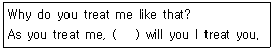
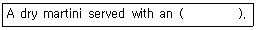
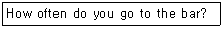
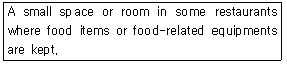
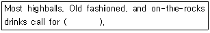
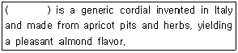

조주기능사 (2014-07-20 기출문제)
1과목: 주류학개론
1. 쇼트 드링크(short drink)란?
- 만드는 시간이 짧은 음료
- 증류주와 청량음료를 믹스한 음료
- 시간적인 개념으로 짧은 시간에 마시는 칵테일 음료
- 증류주와 맥주를 믹스한 음료
(정답률: 91%)

2. Stinger를 조주할 때 사용되는 술은?
- Brandy
- Creme de menthe Blue
- Cacao
- Sloe Gin
(정답률: 73%)
3. 칵테일 명칭이 아닌 것은?
- Gimlet
- Kiss of Fire
- Tequila Sunrise
- Drambuie
(정답률: 90%)
4. 맥주(Beer)에서 특이한 쓴맛과 향기로 보존성을 증가시키고 또한 맥아즙의 단백질을 제거하는 역할을 하는 원료는?
- 효모(yeast)
- 홉(hop)
- 알코올(alcohol)
- 과당(fructose)
(정답률: 94%)
5. 다음 중 우리나라의 전통주가 아닌 것은?
- 소흥주
- 소곡주
- 문배주
- 경주법주
(정답률: 79%)
6. 다음 중 미국을 대표하는 리큐르(liqueur)?
- 슬로우 진(Sloe Gin)
- 리카르드(Ricard)
- 사우던 컴포트(southern confort)
- 크림 데 카카오(Creme de cacao)
(정답률: 71%)
7. 다음 중 오렌지향의 리큐르가 아닌 것은?
- 그랑 마니에르(Grand Marnier)
- 트리플 섹(Triple Sec)
- 꼬엥뜨로(Cointreau)
- 뮤슈(Mousseux)
(정답률: 83%)
8. 다음 증류주 중에서 곡류의 전분을 원료로 하지 않는 것은?
- 진(Gin)
- 럼(Rum)
- 보드카(Vodka)
- 위스키(Whisky)
(정답률: 73%)
9. 스페인 와인의 대표적 토착품종으로 숙성이 충분히 이루어지지 않을 때는 짙은 향과 풍미가 다소 거칠게 느껴질 수 있지만 오랜 숙정을 통해 부드러움이 갖추어져 매혹적인 스타일이 만들어지는 것은?
- Gamay
- Pinot Noir
- Tempranillo
- Cabernet Sauvignon
(정답률: 55%)
10. 화이트와인 품종이 아닌 것은?
- 샤르도네(Chardonnay)
- 말벡(Malbec)
- 리슬링(Riesling)
- 뮈스까(Muscat)
(정답률: 65%)
11. 데킬라의 구분이 아닌 것은?
- 블랑코
- 그라파
- 레포사도
- 아네호
(정답률: 72%)
12. Terroir의 의미를 가장 잘 설명한 것은?
- 포도재배에 있어서 영향을 미치는 자연적인 환경요소
- 영양분이 풍부한 땅
- 와인을 저장할 때 영향을 미치는 온도, 습도, 시간의 변화
- 물이 빠지는 토양
(정답률: 78%)
13. 다음 중 와인의 정화(fining)에 사용되지 않는 것은?
- 규조토
- 계란의 흰자
- 카제인
- 아황산용액
(정답률: 55%)
14. 와인의 숙성 시 사용되는 오크통에 관한 설명으로 가장 거리가 먼 것은?
- 오크 캐스크(cask)가 작은 것 일수록 와인에 뚜렷한 영향을 준다.
- 보르도 타입 오크통의 표준 용량은 225리터이다.
- 캐스크가 오래될수록 와인에 영향을 많이 주게 된다.
- 캐스크에 숙성시킬 경우에 정기적으로 랙킹(racking)을 한다.
(정답률: 53%)
15. 칵테일을 만드는 기본기술 중 글라스에서 직접 만들어 손님에게 제공하는 경우가 있다. 다음 칵테일 중 이에 해당되는 것은?
- Bacardi
- Calvados
- Honeymoon
- Gin Rickey
(정답률: 57%)
16. 롱드링크 칵테일이나 비알콜성 펀치 칵테일을 만들 때 사용하는 것으로 레몬과 설탕이 주원료인 청량음료(soft drink)는?
- Soda Water
- Ginger Ale
- Tonic Water
- Collins Mix
(정답률: 65%)
17. 다음 민속주 중 증류식 소주가 아닌 것은?
- 문배주
- 삼해주
- 옥로주
- 안동소주
(정답률: 45%)
18. 커피 리큐르가 아닌 것은?
- 카모라(Kamora)
- 티아 마리아(Tia Maria)
- 쿰멜(Kummel)
- 칼루아(Kahlua)
(정답률: 61%)
19. 다음 칵테일 중 직접 넣기(Building)기법으로 만드는 칵테일로 적합한 것은?
- Bacardi
- Kiss of Fire
- Honeymoon
- Kir
(정답률: 54%)
20. 칠레에서 주로 재배되는 포도품종이 아닌 것은?
- 말백(Malbec)
- 진판델(Zinfandel)
- 메를로(Merlot)
- 까베르네 쇼비뇽(Cabernet Sauvignon)
(정답률: 46%)
21. 코냑은 무엇으로 만든 술인가?
- 보리
- 옥수수
- 포도
- 감자
(정답률: 81%)
22. Draft Beer의 특징으로 가장 잘 설명한 것은?
- 맥주 효모가 살아 있어 맥주의 고유한 맛을 유지한다.
- 병맥주 보다 오래 저장할 수 있다.
- 살균처리를 하여 생맥주 맛이 더 좋다.
- 효모를 미세한 필터로 여과하여 생맥주 맛이 더 좋다.
(정답률: 88%)
23. 다음 중 몰트위스키가 아닌 것은?
- A'bunadh
- Macallan
- Crown royal
- Glenlivet
(정답률: 71%)
24. Gin Fizz의 특징이 아닌 것은?
- 하이볼 글라스를 사용한다.
- 기법으로 Shaking과 Building을 병행한다.
- 레몬의 신맛과 설탕의 단맛이 난다.
- 칵테일 어니언(onion)으로 장식한다.
(정답률: 84%)
25. 음료의 살균에 이용되지 않는 방법은?
- 저온 장시간 살균법(LTLT)
- 자외선 살균법
- 고온 단시간 살균법(HTST)
- 초고온 살균법(UHT)
(정답률: 77%)
26. 다음 중 롱 드링크(Long drink)에 해당하는 것은?
- 마티니(Martini)
- 진피즈(Gin Fizz)
- 맨하탄(Manhattan)
- 스팅어(Stinger)
(정답률: 74%)
27. 다음 중 원료가 다른 술은?
- 트리플 섹
- 마라스퀸
- 꼬엥뜨로
- 블루 퀴라소
(정답률: 63%)
28. 다음 중 양조주가 아닌 것은?
- Silvowitz
- Cider
- Porter
- Cava
(정답률: 47%)
29. 커피의 3대 원종이 아닌 것은?
- 아라비카종
- 로부스타종
- 리베리카종
- 수마트라종
(정답률: 92%)
30. 1 대시(dash)는 몇 mL인가?
- 0.9mL
- 5mL
- 7mL
- 10mL
(정답률: 70%)
2과목: 주장관리개론
31. 빈(bin)이 의미하는 것으로 가장 적합한 것은?
- 프랑스산 적포도주
- 주류 저장소에 술병을 넣어 놓는 장소
- 칵테일 조주 시 가장 기본이 되는 주재료
- 글라스를 세척하여 담아 놓는 기구
(정답률: 82%)
32. 백포도주를 서비스 할 때 함께 제공하여야 할 기물로 가장 적합한 것은?
- bar spoon
- wine cooler
- strainer
- tongs
(정답률: 89%)
33. 음료서비스 시 수분흡수를 위해 잔 밑에 놓는 것은?
- coaster
- pourer
- stopper
- jigger
(정답률: 91%)
34. Floating의 방법으로 글라스에 직접 제공하여야 할 칵테일은?
- Highball
- Gin fizz
- Pousse cafe
- Flip
(정답률: 79%)
35. 다음 중 네그로니(Negroni) 칵테일의 재료가 아닌 것은?
- Dry Gin
- Campari
- Sweet Vermouth
- Flip
(정답률: 73%)
36. 칵테일의 기법 중 stirring을 필요로 하는 경우와 가장 관계가 먼 것은?
- 섞는 술의 비중의 차이가 큰 경우
- Shaking 하면 만들어진 칵테일이 탁해질 것 같은 경우
- Shaking 하는 것 보다 독특한 맛을 얻고자 할 경우
- Cocktail의 맛과 향이 없어질 우려가 있을 경우
(정답률: 58%)
37. 레드와인의 서비스로 틀린 것은?
- 적정한 온도로 보관하여 서비스한다.
- 진의 가득 차도록 조심해서 서서히 따른다.
- 와인 병이 와인 잔에 닿지 않도록 따른다.
- 와인 병 입구를 종이냅킨이나 크로스냅킨을 이용하여 닦는다.
(정답률: 90%)
38. Cognac의 등급 표시가 아닌 것은?
- V.S.O.P
- Napoleon
- Blended
- Vieux
(정답률: 59%)
39. 주장 원가의 3요소는?
- 인건비, 재료비, 주장경비
- 재료비, 주장경비, 세금
- 인건비, 봉사료, 주장경비
- 주장경비, 세금, 봉사료
(정답률: 96%)
40. 다음 중 용량에 있어 다른 단위와 차이가 가장 큰 것은?
- 1 Pony
- 1 Jigger
- 1 Shot
- 1 Ounce
(정답률: 49%)
41. Standerd recipe를 지켜야 하는 이유로 가장 거리가 먼 것은?
- 다양한 맛을 낼 수 있다.
- 객관성을 유지할 수 있다.
- 원가책정의 기초로 삼을 수 있다.
- 동일한 제조 방법으로 숙련할 수 있다.
(정답률: 86%)
42. 포도주를 관리하고 추천하는 직업이나 그 일을 하는 사람을 뜻하며 와인마스타(wine master)라고도 불리는 사람은?
- 쉐프(chef)
- 소믈리에(sommelier)
- 바리스타(barista)
- 믹솔로지스트(mixologist)
(정답률: 94%)
43. Long drink가 아닌 것은?
- Pina colada
- Manhattan
- Singapore Sling
- Rum Punch
(정답률: 73%)
44. Fizz류의 칵테일 조주 시 일반적으로 사용되는 것은?
- shaker
- mixing glass
- pitcher
- stirring rod
(정답률: 48%)
45. 탄산음료나 샴페인을 사용하고 남은 일부를 보관 시 사용되는 기물은?
- 스토퍼
- 포우러
- 코르크
- 코스터
(정답률: 78%)
46. 주장(bar)에서 유리잔(glass)을 취급·관리하는 방법으로 틀린 것은?
- cocktail glass는 스템(stem)의 아래쪽을 잡는다.
- Wine glass는 무늬를 조각한 크리스털 잔을 사용하는 것이 좋다.
- Brandy snifter는 잔의 받침(foot)과 볼(bowl)사이에 손가락을 넣어 감싸 잡는다.
- 냉장고에서 차게 해 둔 잔(glass)이라도 사용 전 반드시 파손과 청결상태를 확인한다.
(정답률: 82%)
47. Brandy Base Cocktail이 아닌 것은?
- Gibson
- B & B
- Sidecar
- Stinger
(정답률: 54%)
48. store room에서 쓰이는 bin card의 용도는?
- 품목별 불출입 재고 기록
- 품목별 상품특성 및 용도기록
- 품목별 수입가와 판매가 기록
- 품목별 생산지와 빈티지 기록
(정답률: 75%)
49. June bug 칵테일의 재료가 아닌 것은?(오류 신고가 접수된 문제입니다. 반드시 정답과 해설을 확인하시기 바랍니다.)
- vodka
- coconut flavored Rum
- blue curacao
- sweet & sour Mix
(정답률: 50%)
50. 칵테일의 분류 중 맛에 따른 분류에 속하지 않는 것은?
- 스위트 칵테일(Sweet Cocktail)
- 샤워 칵테일(Sour Cocktail)
- 드라이 칵테일(Dry Cocktail)
- 아페리티프 칵테일(Aperitif Cocktail)
(정답률: 83%)
3과목: 고객서비스영어
51. "How would you like your steak?"의 대답으로 가장 적합한 것은?
- Yes, I like it.
- I like my steak
- Medium rare, please.
- Filet mignon, please.
(정답률: 88%)
52. Which is not the name of sherry?
- Fino
- Olorso
- Tio pepe
- Tawny port
(정답률: 38%)
53. Where is the place not to produce wine in France?
- Bordeaux
- Bourgonne
- Alsace
- Mosel
(정답률: 51%)
54. “Scotch on the rock, please.“의 의미로 가장 적합한 것은?
- 스카치위스키를 마시다.
- 바위 위에 위스키
- 스카치 온더락 주세요.
- 얼음에 위스키를 붓는다.
(정답률: 86%)
55. 다음의 ( )에 들어갈 알맞은 것은?

- as
- so
- like
- and
(정답률: 54%)
56. Which is the best answer for the blank?

- red cherry
- pearl onion
- lemon slice
- olive
(정답률: 80%)
57. 다음 질문에 대한 대답으로 가장 적절한 것은?

- For a long time.
- When I am free.
- Quite often. OK.
- From yesterday.
(정답률: 52%)
58. 아래는 어떤 용어에 대한 설명인가?

- Pantry
- Cloakroom
- Reception Desk
- Hospitality room
(정답률: 55%)
59. Which is the best answer for the blank?

- shaved ice
- crushed ice
- cubed ice
- lumped ice
(정답률: 73%)
60. 다음 ( ) 안에 들어갈 단어로 알맞은 것은?

- Anisette
- Amaretto
- Advocast
- Amontillado
(정답률: 77%)